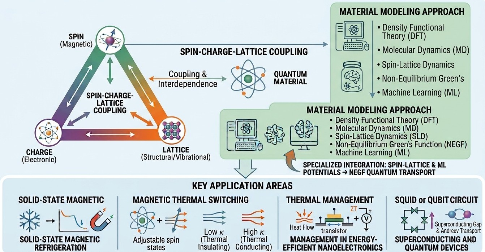

Welcome to my research website, where I explore how spin, charge, and lattice shape the materials of tomorrow.
My research interests lie in understanding how heat, charge, and spin move through materials, from the atomistic scale to device-relevant length scales. Currently, I am a computational condensed-matter physicist and Research Engineer II in the George W. Woodruff School of Mechanical Engineering at Georgia Tech, where I work on nanoscale thermal transport. My current work develops non-equilibrium and atomistic Green’s function (NEGF and AGF) methods for phonon and coupled electron–phonon transport, together with machine-learned interatomic potentials for interfaces and devices.
Before Georgia Tech, I was a postdoctoral researcher at UC Santa Barbara and Michigan Technological University, studying magnetocaloric and magnetoelectric materials, 2D materials, and thermoelectrics using density functional theory, molecular dynamics, and spin-lattice dynamics. This work has led to more than 40 peer-reviewed papers, in journals including Physical Review Letters, Physical Review B and Chemistry of Materials.

Current focus
Phonon quantum transport
NEGF and AGF simulations of interfacial and nanowire heat flow, including anharmonic scattering and coupled electron–phonon effects.
Machine-learned potentials
DFT-trained neuroevolution potentials (NEP) that bring first-principles accuracy to large-scale MD of interfaces and devices.
Spin-lattice dynamics
Coupled spin and lattice simulations of magnetocaloric materials, magnetostructural transitions and magnetic thermal switching.
News
- 2026
Coupled spin-lattice dynamics across a magnetostructural phase transition, published in Materials Today Physics. Read the paper
- 2026
New preprint on anharmonic quantum transport in ultrathin silicon nanowires. Read on arXiv
- 2026
Machine-learning-potential study of the phonon bridge effect at Si/Ti interfaces, published in ACS Applied Electronic Materials. Read the paper
- 2026
Defect–piezoelectric modulation of C3N5 for on-site hydrogen production, published in Precision Chemistry. Read the paper
Positions and education
- Research Engineer II, Georgia Institute of TechnologyGeorge W. Woodruff School of Mechanical Engineering, with Prof. Satish Kumar
- Postdoctoral Researcher, University of California, Santa BarbaraWith Prof. Bolin Liao
- Postdoctoral Researcher, Michigan Technological UniversityWith Prof. Ravindra Pandey
- PhD, Central University of Tamil NaduIndia
Selected publications
- Patra, L., Xiang, Z., Chen, Y., & Liao, B. Coupled Spin-lattice Dynamics across a Magnetostructural Phase Transition. Materials Today Physics 68, 102253. doi:10.1016/j.mtphys.2026.102253
- Patra, L. & Liao, B. Indirect exchange interaction leads to large lattice contribution to magnetocaloric entropy change. Physical Review Letters 131, 066703. doi:10.1103/PhysRevLett.131.066703
- Zhang, F., Patra, L., Chen, Y., Ouyang, W., Sarte, P., Adajian, S., Zuo, X., Yang, R., Luo, T. & Liao, B. Room-temperature magnetic thermal switching by suppressing phonon-magnon scattering. Phys. Rev. B 109, 184411. doi:10.1103/PhysRevB.109.184411
- Patra, L., Quan, Y. & Liao, B. Impact of dimensionality on the magnetocaloric effect in two-dimensional magnets. Journal of Applied Physics 136, 024301. doi:10.1063/5.0218007
- Singh, M., Patra, L., Zhang, C., MacDougall, G. J., Datta, S., Cahill, D. G., & Kumar, S. Revealing Phonon Bridge Effect for Amorphous vs Crystalline Metal–Silicide Layers at Si/Ti Interfaces by a Machine Learning Potential. ACS Applied Electronic Materials 8, 2373-2383. doi:10.1021/acsaelm.5c02592